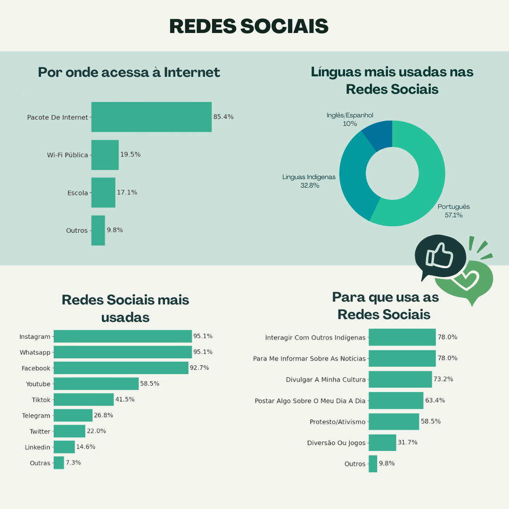
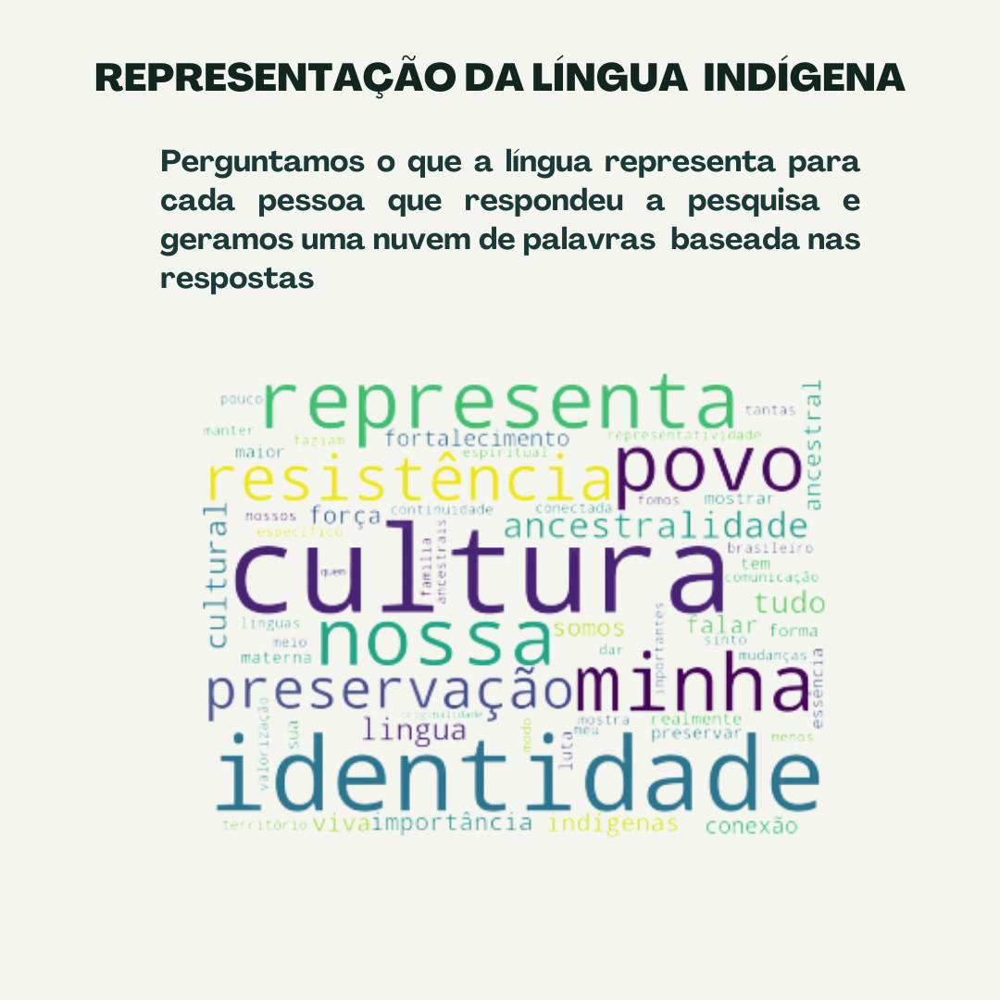

Esses são os resultados da nosso questionário aplicado durante o Encontro Nacional dos Estudantes Indígenas em julho de 2022 sobre o uso das redes sociais pelas comunidades Indígenas.
O infográfico abaixo destaca os resultados dessa pesquisa.
Principais observações
- Quase 33% dos participantes utilizam línguas Indígenas em alguma rede social.
- Instagram, WhatsApp e Facebook foram as redes mais usadas pelos participantes.
- Os participantes usam a mídia social para diferentes atividades, desde o envolvimento com conteúdo produzido por sua própria cultura, bem como o conteúdo para engajar também não indígenas (por exemplo, ativismo).



Tivemos uma partipação bem expressiva de membros da comunidade Pataxó e da Kaingang! Obrigada aos que responderam a nosssa pesquisa durante o ENEI'22. O questionário continua, assim precisamos da sua ajuda. Por favor, divulgue o nosso questionário. Ele é anônimo e só leva 5 minutos.
Se quiser citar essa nossa pesquisa, pode usar esse texto:
Marisa Vasconcelos, Nicole Dalmiglio, Priscila Mizukami. Redes Sociais e Comunidades Indígenas durante o ENEI'22.